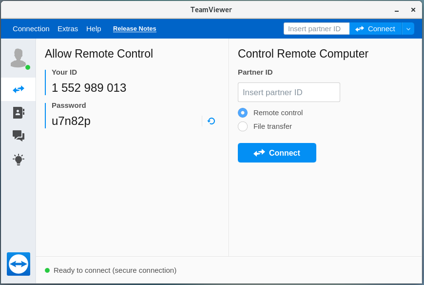

程序安装¶
本程序安装要求
- CERN ROOT 6
GCC >= 4.8
FFTW3
本程序测试过的系统包括 CentOS7 / Scientific Linux 7 / Ubuntu18.04
本程序包采用 PLX9054 驱动版本为 8.23。该版本的驱动支持的操作系统有 CentOS 7/CentOS 8/Debian 08/Debian 09/Debian 10/Ubuntu 18.04。
危险
图形界面程序与非图形界面程序不能同时运行！
图形界面程序与非图形界面程序不能同时运行！
图形界面程序与非图形界面程序不能同时运行！
软件安装步骤¶
删除个人目录下的老版本PKUXIADAQ文件夹
将本程序包解压缩到个人目录中($HOME)
设置环境变量
编译Plx9054驱动
编译pixie16驱动API(该API被吴鸿毅修改过，非官方标准驱动)
编译图形化获取软件
编译非图形化获取软件
编译在线监视程序
编译数据转换程序
编译事件重构程序(可选)
##设置环境变量
#在 .bashrc 文件中添加
export PLX_SDK_DIR=$HOME/PKUXIADAQ/PlxSdk
# 将 PKUXIADAQ.tar.gz(或者PKUXIADAQ-master.tar.gz) 放置到 /home 下的个人目录下，即 ~/ 位置
tar -zxvf PKUXIADAQ.tar.gz #解压缩
或者
tar -zxvf PKUXIADAQ-master.tar.gz
mv PKUXIADAQ-master PKUXIADAQ
#得到 PKUXIADAQ 目录
##编译Plx9054驱动
#打开新终端
cd ~
cd PKUXIADAQ/
rm -rf PlxSdk #删除可能存在的未删除驱动，如果没有该目录则不用执行该行命令
tar -xvf PlxSdk823.tar
cd PlxSdk/PlxApi/
make clean
make
#成功后你将会看到 Library "Library/PlxApi.a" built successfully
cd ../Samples/ApiTest/
make clean
make
#成功后你将会看到 Application "App/ApiTest" built successfully
cd ../../Driver/
./builddriver 9054
#成功后你将会看到 Driver "Plx9054/Plx9054.ko" built sucessfully
##编译pixie16
cd ~
cd PKUXIADAQ/software/
make clean
make
#只要没报错，并且该文件夹内生成libPixie16App.a libPixie16Sys.a
#修改设置参数
cd ~
cd PKUXIADAQ/parset/
#修改cfgPixie16.txt文件。
#其中CrateID 后面的数值表示机箱编号，该值允许0-15。如果单机箱则随意设置(一般就采用默认的0)，如果多个机箱同步运行务必让每个机箱的该编号设置为不同的数值。
#SettingPars 后面为参数设置文件，写入要采用的参数配置文件即可。
#ModuleSlot 后面第一个数值表示插件个数，如果有3个插件则为3。之后的数字未为每个插件在机箱的插槽位置（插槽位置从2开始计数），有三个插件则之后分别为2 3 4。
#AutoRunModeTimes 后面数值为自动运行模式下自动切换的时间
#参数 ModuleSampingRate与ModuleBits 只对离线模式生效，当主界面采用Offline模式初始化时则读取该参数。
#修改Run.config文件，该文件中第一行为原始数据存放路径，第二行为文件名。
#修改RunNumber文件，该文件中的数值为运行的run number。
##编译图形化获取软件
cd ~
cd PKUXIADAQ/GUI/
make clean
make
##编译非图形化获取软件
cd ~
cd PKUXIADAQ/NOGUI/
make clean
make
##编译在线监视程序
cd ~
cd PKUXIADAQ/OnlineStattics/
make clean
make
## 编译数据转换程序
cd ~
cd PKUXIADAQ/Decode/
#修改 UserDefine.hh，按照程序中的说明修改即可
make clean
make
## 编译事件重构程序
cd ~
cd PKUXIADAQ/MakeEvent/
#修改 UserDefine.hh，按照程序中的说明修改即可
make clean
make
程序使用说明¶
开机机箱后重启电脑(电脑必须晚于机箱开启)
开启机箱后ROOT权限下加载Plx9054驱动
正常获取
## ROOT权限下加载Plx9054驱动
cd ~
cd PKUXIADAQ/PlxSdk/Bin/
## CENTOS
su #输入ROOT密码
./Plx_load 9054
## Ubuntu
## 需要修改文件 Plx_load 第18行为 export PLX_SDK_DIR=$HOME/PKUXIADAQ/PlxSdk
sudo ./Plx_load 9054
#将会看到加载成功的提示
exit #退出ROOT权限
##启动图形界面程序
cd ~
cd ~/PKUXIADAQ/GUI
./pku
#将会弹出图形化界面
#可选择 Online/Offline Mode 然后按 Boot 初始化
#等待初始化成功后，可修改输出数据文件路径，文件名，run number。按 Complete 按钮确认。
#此时 LSRunStart 按钮变为可操作。即可开始按Start，之后第二次按即为Stop。
#Online Statistics选项选择表示发送在线统计
#Update Energy Monitor每选择一次则从插件内部读取一次能谱信息并发送给在线程序（频繁选择会影响获取）
##启动非图形界面程序
cd ~
cd ~/PKUXIADAQ/NOGUI
./pku
根据提示输入控制命令
##启动在线监视程序
cd ~
cd PKUXIADAQ/OnlineStattics/
./online
#将会弹出图形化界面
#按 RunStart开始启动监视，每3秒更新一次每路的输入率、输出率。(开启机箱后第一次启用该程序需要在获取开启之后)
#监视界面右下角有对写入硬盘使用量的监视。
#EnergyMonitor页面用来查看能谱。由于插件内部寄存器大小限制，该能谱与实际能谱道址范围存在差别。
##执行数据转换程序
cd ~
cd PKUXIADAQ/Decode/
#在上一轮获取结束之后，我们便可将上一轮数据转为ROOT文件
./decode xxx
# xxx 为运行 run number
常见安装错误¶
针对 CentOS/Scientific Linux 7.6/7.7，安装 PLX9054 驱动时候错误的解决方案：
./builddriver 9054
Build: Plx9054
- PLA: CentOS Linux release 7.6.1810 (Core)
- KER: 3.10.0-957.12.2.el7.x86_64
- INC: /lib/modules/3.10.0-957.12.2.el7.x86_64/build/include
- CPU: x86_64 (64-bit Little Endian)
- CMP: Gcc
- TYP: Driver
- PLX: 9054
- CFG: Release
make[1]: Entering directory '/usr/src/kernels/3.10.0-957.12.2.el7.x86_64'
arch/x86/Makefile:166: *** CONFIG_RETPOLINE=y, but not supported by the compiler. Compiler update recommended.。 Stop.
make[1]: Leaving directory '/usr/src/kernels/3.10.0-957.12.2.el7.x86_64'
make: *** [BuildDriver] Error 2
以上为错误发生时候的输出提示。
此时，用户可以修改 /usr/src/kernels/3.10.0-957.12.2.el7.x86_64/arch/x86/Makefile 文件，通过注释以下代码来避免这个错误发生。
ifneq ($(RETPOLINE_CFLAGS),)
KBUILD_CFLAGS += $(RETPOLINE_CFLAGS) -DRETPOLINE
else
$(error CONFIG_RETPOLINE=y, but not supported by the compiler. Compiler update recommended.)
endif
TeamViewer¶
TeamViewer是一个应用程序，可让您远程连接到多个工作站。 有许多应用程序可以远程控制不同的系统，但TeamViewer设置为具有极强的可访问性，同时功能也很强大。
